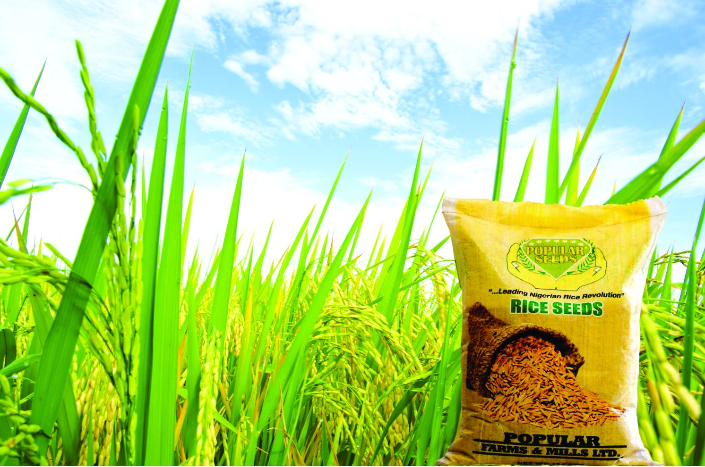

Rice, sesame, seeds and agrochemicals
Stallion has established world-class rice mills at strategic locations to promote local milling. The company works with the farming community and encourages the use of modern technologies and practices for increased local production of paddy, fostering food sufficiency.
The division supplies seeds and agrochemicals back into the same farming communities it buys from, closing the loop between input and offtake.
Distributors, suppliers, manufacturers, investors and candidates — we will direct your enquiry to the right desk within one business day.